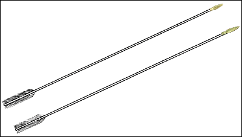
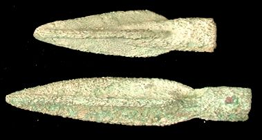

The Challenge -
Arrows

Some of these arrow-heads were discovered at Ashur, the ancient capital of Assyria on the river Tigris. Arrowheads were made using small clay moulds. The finished arrowheads were then attached to stiff reeds and placed in quivers for the archers. Sometimes arrow heads had a barb which would make it difficult to remove from a body without tearing the flesh.

|
|